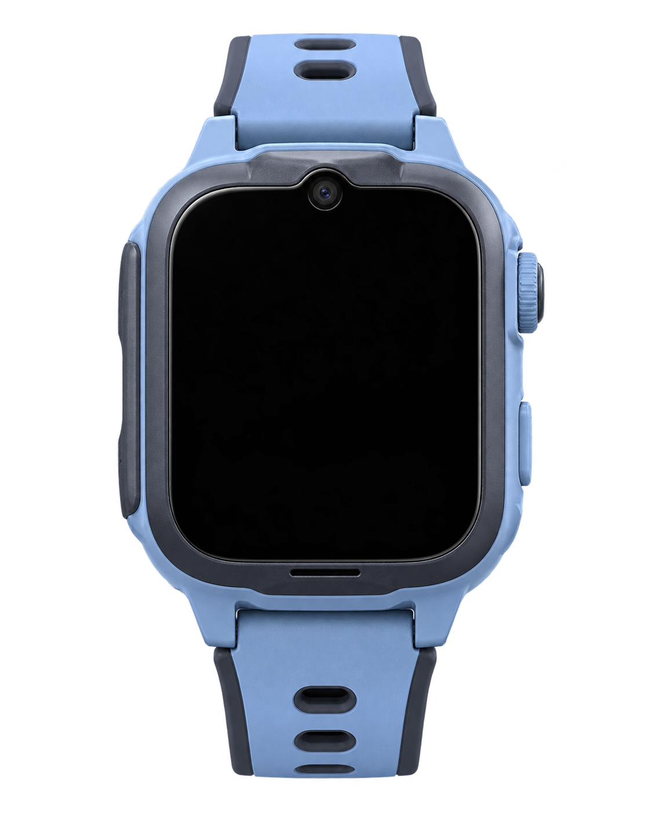

把零散制作，
变成可控
量产。
内部 AI 工作流承接重复制作，让人工集中在品检与例外返修。
我设计生产方案、规范与交付链路，支撑单周期 2000+ 条视频上线。
- 我的职责
- 工作流设计 · 质检标准 · 交付推进
- 项目场景
- 儿童电话手表 / 单词内容
成片 / 小屏预览01 / 07

woof吠叫
选一条成片，听听看。
表盘中的真实成片 · 展厅交互演示
每一条，都落到具体的内容。
7 条本地成片节选，点击切换表盘。完整项目单周期上线 2000+ 条视频。
交付从预估两周，
收束到实际一周。
减少多环节人工接力，让整批任务按统一路径推进。
制作耗时两天，总周期仍计入品检与返修。
制作阶段2 天
工作流承接批量制作
品检与返修逐条检查
裁切、可读性与音画问题
含品检与返修的总交付1 周
2000+ 条视频单周期上线
一键启动的背后，
是六段可控的流程。
把输入、处理、检查和出口先定义清楚。
点选阶段，看我如何组织内容生产。
01 / 06
素材输入
输入
产出
流程说明与成片演示；此页面不触发真实生产任务。
把一次做出来，
变成持续交付的能力。
我改变的是生产的组织方式：让重复处理交给自动化，让质量判断集中到清楚的检查点，最终对完整交付负责。
- 从分散操作，到统一任务
- 我设计输入规范与制作链路，把素材、生成、语音字幕和后处理接起来，减少多工具搬运与多环节人工接力。
- 从“生成完成”，到可验收
- 我定义设备画幅、主体焦点、字幕安全区与音画同步的检查标准。人工集中品检与例外返修，让规模化生产仍有明确的质量出口。
- 从单条成片，到整批上线
- 我组织裁剪、编码、批量命名与归档，推进制作、品检和返修衔接。统一出口支撑整批交付，也留下可继续复用的生产方法。
从内容生成，走到业务交付。
继续看我的项目